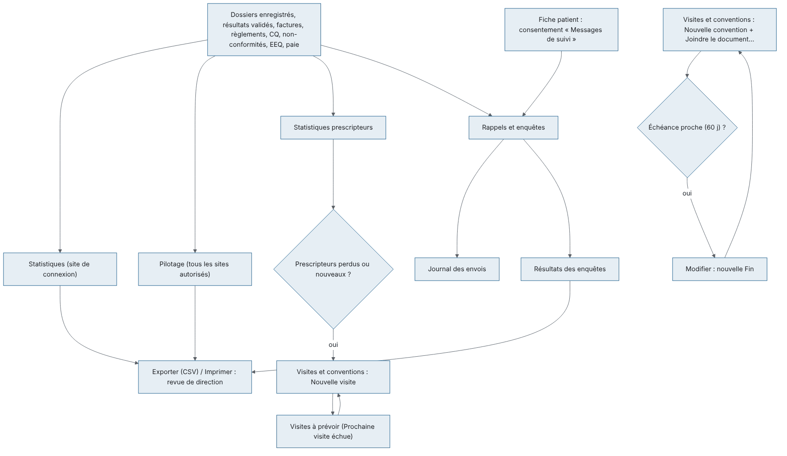
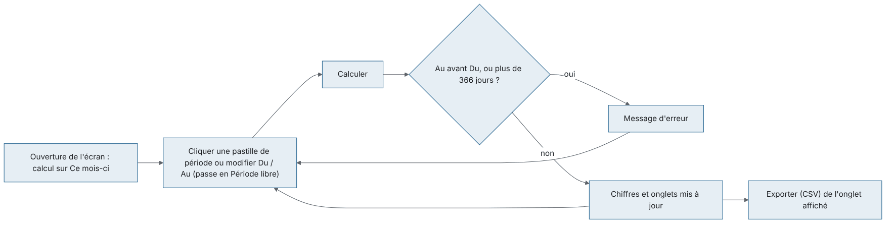
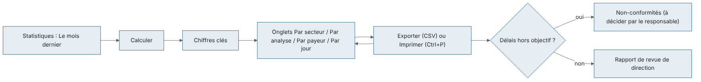
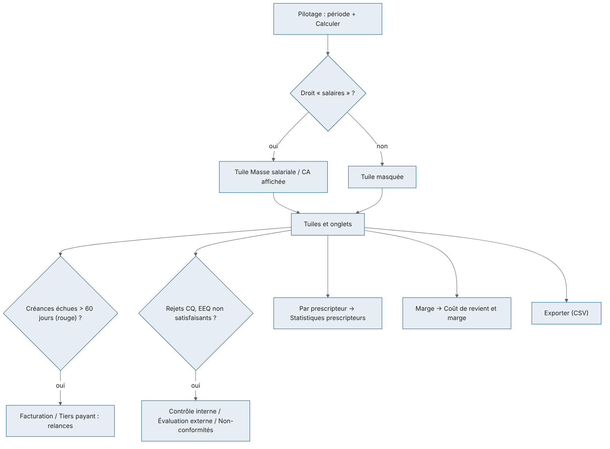
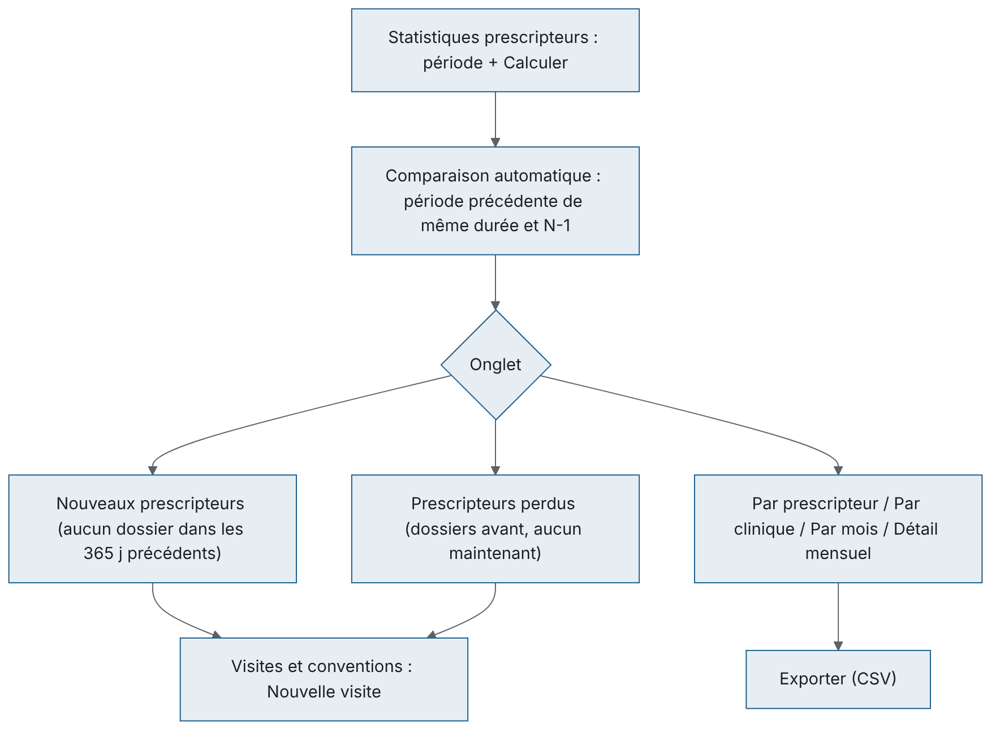
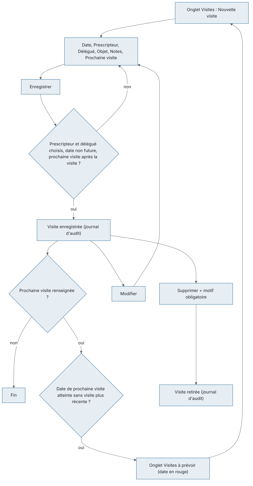
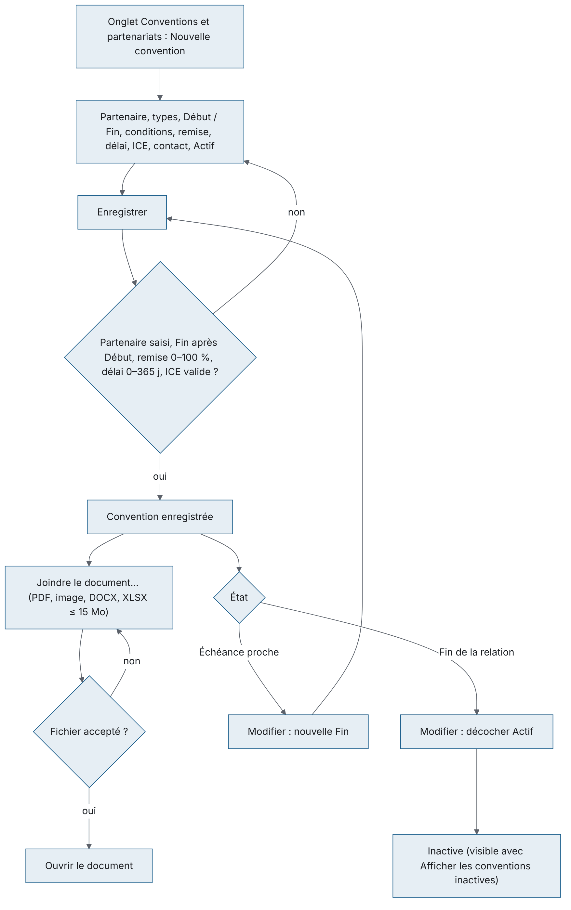
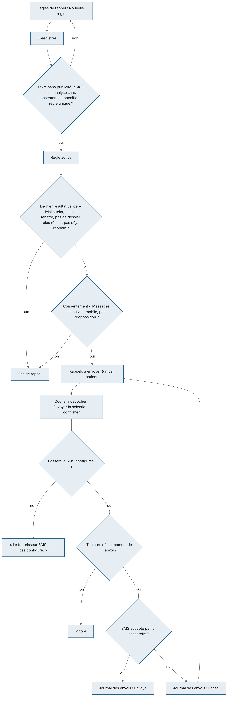
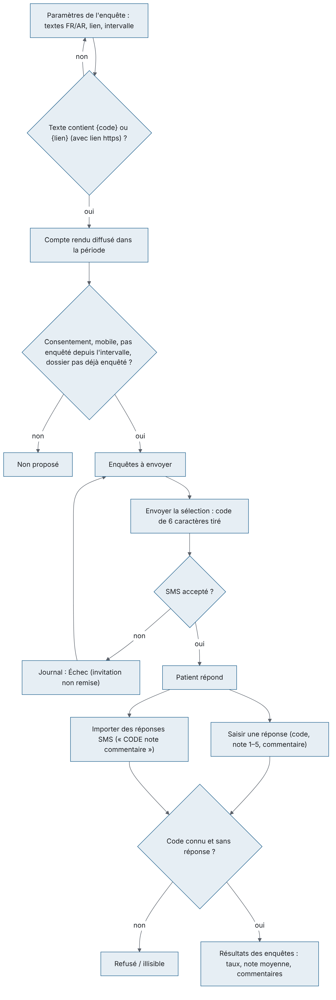

À quoi sert le module. Ce chapitre couvre les écrans qui suivent l'activité du laboratoire. Il couvre aussi la relation avec les prescripteurs, les partenaires et les patients : - Statistiques et Pilotage, en haut du menu ; - le groupe RELATIONS : Statistiques prescripteurs, Visites et conventions et Rappels et enquêtes.
Ces écrans ne modifient aucun dossier patient : ils lisent l'activité et la présentent. Font exception les envois de SMS de Rappels et enquêtes, ainsi que les visites et conventions qu'on y enregistre.
Qui l'utilise. Le biologiste responsable (directeur), le responsable qualité, la comptabilité et l'administrateur. Chaque écran demande son propre droit :
| Écran | Droit demandé | Rôles livrés qui l'ont |
|---|---|---|
| Statistiques | « consulter les statistiques » | Biologiste responsable, Biologiste, Responsable qualité, Comptabilité, Administrateur |
| Pilotage | « pilotage » (et « salaires » pour la masse salariale) | Biologiste responsable, Administrateur |
| Statistiques prescripteurs | « relations — consultation » | Biologiste responsable, Comptabilité, Administrateur |
| Visites et conventions | « relations — consultation » ; « relations — gestion » pour saisir | Biologiste responsable, Comptabilité (consultation), Administrateur |
| Rappels et enquêtes | « campagnes de messages patients » | Biologiste responsable, Administrateur |
Liens avec les autres modules. Ces écrans lisent : - les dossiers et les résultats validés ; - les factures et les règlements (Facturation) ; - le contrôle qualité, les non-conformités et l'évaluation externe (Qualité) ; - la paie (Ressources humaines) ; - le coût des réactifs (Finances, Coût de revient et marge) ; - le consentement « Messages de suivi » de la fiche patient.
Ils servent la revue de direction (ISO 15189), les relances de créances et le suivi des prescripteurs.
Vue d'ensemble :

Barre de période (commune) :

Barre de période commune. Tous ces écrans ont en haut la même barre :
Sur Visites et conventions, Calculer s'appelle Actualiser. Sur Visites et conventions et Rappels et enquêtes, ce bouton est secondaire : le bouton bleu est l'action de l'onglet (« Nouvelle visite », « Envoyer la sélection »…) ; - une rangée de pastilles de période : Ce mois-ci (par défaut), Le mois dernier, Cette année, L'année dernière et Période libre ; - deux dates Du et Au. Modifier une date passe automatiquement sur Période libre.
Le bouton Exporter (CSV) exporte l'onglet affiché dans un fichier CSV (séparateur point-virgule, accents conservés), qui s'ouvre directement dans Excel.
Règles communes : - La date de fin ne peut pas précéder la date de début (« La date de fin précède la date de début. »). - La période est limitée à 366 jours (« La période ne peut pas dépasser 366 jours. »). - L'écran calcule automatiquement à l'ouverture, sur le mois en cours. Après un changement de dates, cliquer Calculer. - Un export sur un onglet vide affiche « Aucune donnée ». Sur Statistiques, Exporter (CSV) est grisé tant qu'aucun calcul n'a abouti ; sur un onglet vide, il ne se passe rien. - Une liste garde la ligne choisie après une actualisation.
À quoi sert cet écran
Cet écran donne les chiffres d'activité d'une période pour la revue de direction (ISO 15189) : les volumes, les délais et les montants. Il ne porte que sur le site de connexion.
Qui y a accès : droit « consulter les statistiques ». Rôles livrés : Biologiste responsable, Biologiste, Responsable qualité, Comptabilité, Administrateur.
Fonctionnalités - Pastilles Ce mois-ci, Le mois dernier, Cette année, L'année dernière et Période libre : elles choisissent la période. - Du / Au : la période libre. - Calculer (bouton principal, F5) : calcule les chiffres de la période. Le calcul se fait aussi à l'ouverture. - Exporter (CSV) : exporte l'onglet affiché. Il est grisé tant qu'aucun calcul n'a abouti. - Onglets Par secteur, Par analyse, Par payeur et Par jour : le détail des chiffres. - Imprimer (Ctrl+P, dans le bandeau de la fenêtre) : imprime la liste affichée.
L'écran
| Chiffre | Signification |
|---|---|
| Dossiers | Dossiers enregistrés dans la période qui ont au moins une analyse non annulée |
| Patients | Patients distincts de ces dossiers |
| Analyses | Analyses réalisées (non annulées) ; entre parenthèses, le nombre d'analyses annulées |
| Délai réception → validation · dans les délais | Délai moyen en heures entre la réception de l'échantillon et la validation biologique, puis le % d'analyses validées avant l'heure de rendu promise |
| Montant facturable | Somme des prix appliqués aux analyses réalisées |
| Facturé | Factures émises datées dans la période |
| Avoirs | Avoirs émis datés dans la période |
| Encaissé | Règlements encaissés dans la période |
Scénarios
Règles et contrôles
Flux : cet écran ne fait que lire. Les fichiers CSV alimentent le rapport de revue de direction. Les écarts de délais renvoient vers Non-conformités si besoin.

À quoi sert cet écran
C'est le tableau de bord du directeur sur une période. Il donne, tous sites confondus : - le chiffre d'affaires et la marge ; - les créances ; - la masse salariale ; - la qualité et les délais.
Qui y a accès : droit « pilotage ». Rôles livrés : Biologiste responsable, Administrateur. La tuile de masse salariale demande en plus le droit « salaires », qu'a le Biologiste responsable.
Fonctionnalités - Pastilles de période, Du / Au : comme sur tous les écrans du chapitre. - Calculer (bouton principal, F5) : calcule le tableau de bord. Le calcul se fait aussi à l'ouverture. - Exporter (CSV) : exporte l'onglet affiché. Sur un onglet vide, le message est « Aucune donnée ». - Onglets Par jour, Par site, Par payeur, Par prescripteur, Créances échues et Qualité.
L'écran
| Tuile | Contenu |
|---|---|
| Chiffre d'affaires | Prix des analyses réalisées · nombre de dossiers |
| Facturé net / encaissé | Factures moins avoirs / règlements encaissés |
| Coût réactifs | Coût réactif estimé des analyses de la période |
| Marge | Chiffre d'affaires moins coût réactifs · % de marge |
| Créances échues / encours | Montant échu (en rouge s'il y en a) / total restant dû |
| Masse salariale / CA | Coût employeur des mois de paie clôturés entièrement compris dans la période · % du chiffre d'affaires de ces mêmes mois. Sinon : « Aucun mois de paie clôturé sur la période ». Tuile absente sans le droit « salaires ». |
| Délai de rendu moyen | Délai réception → validation · % dans les délais (même calcul que Statistiques) |
| Rejets CQ | Contrôles rejetés / contrôles passés · % |
Scénarios
Règles et contrôles
Flux : le Pilotage mène aux actions suivantes : - Facturation / Tiers payant, pour les créances ; - Non-conformités / Évaluation externe, pour la qualité ; - Coût de revient et marge, pour le détail par analyse ; - Statistiques prescripteurs, pour le détail par prescripteur.

À quoi sert cet écran
Cet écran montre ce que chaque médecin et chaque clinique envoie au laboratoire, et comment cela évolue. La comparaison avec la période précédente et avec l'année précédente (N-1) est automatique.
Qui y a accès : droit « relations — consultation ». Rôles livrés : Biologiste responsable, Comptabilité, Administrateur.
Fonctionnalités - Pastilles de période, Du / Au : comme sur tous les écrans du chapitre. - Calculer (bouton principal, F5) : calcule l'activité et les comparaisons. Le calcul se fait aussi à l'ouverture. - Exporter (CSV) : exporte l'onglet affiché. - Six onglets, décrits ci-dessous.
L'écran
Scénarios
Règles et contrôles
Flux : cet écran mène à Visites et conventions (visite de suivi). Il complète l'onglet Par prescripteur du Pilotage.

À quoi sert cet écran
Cet écran a deux usages : - suivre les visites du délégué chez les prescripteurs ; - tenir le registre des conventions (cliniques, entreprises, laboratoires partenaires, mutuelles), avec le document signé.
Qui y a accès
Fonctionnalités - Nouvelle visite (bouton principal, onglets Visites et Visites à prévoir) : enregistre une visite. - Nouvelle convention (bouton principal, onglet Conventions et partenariats) : enregistre une convention. - Modifier : ouvre la visite ou la convention choisie. Il est grisé sans ligne choisie. Le double-clic fait de même dans Visites et Conventions et partenariats, mais pas dans Visites à prévoir. - Plus d'actions contient trois actions : - Supprimer (visites) : retire une visite saisie par erreur, avec un motif obligatoire ; - Joindre le document… (conventions) : ajoute le document signé (PDF, image, DOCX, XLSX, 15 Mo au plus) ; - Ouvrir le document (conventions) : ouvre la dernière version jointe. Il est grisé s'il n'y a pas de document. - Actualiser (F5) : recharge l'onglet. - Exporter (CSV) : exporte l'onglet affiché. - Pastilles de période, Du / Au : elles ne filtrent que l'onglet Visites. - Afficher les conventions inactives (case au bout de la ligne de rappel, onglet des conventions) : montre aussi les conventions désactivées.
L'écran
| État d'une convention | Signification |
|---|---|
| En vigueur (pastille verte ✓) | Active, et la date du jour est entre Début et Fin (ou il n'y a pas de Fin) |
| Échéance proche (pastille orange !) | En vigueur et se termine dans 60 jours ou moins : à renouveler |
| Hors période (pastille grise ○) | Active, mais pas encore commencée ou déjà terminée |
| Inactive (pastille grise ○) | Case Actif décochée (visible seulement avec Afficher les conventions inactives) |
Scénarios
Remarque : ce registre est documentaire. L'envoi des échantillons se fait dans Sous-traitance (groupe LISTE DE TRAVAIL), qui n'utilise pas cette convention (à vérifier). 7. Joindre le document signé 1. Sélectionner la convention, puis cliquer Plus d'actions > Joindre le document…. 2. Choisir un fichier PDF, une image (JPG, PNG, TIFF) ou un fichier Word / Excel sans macros (DOCX, XLSX), de 15 Mo au plus. 3. Le nom du fichier apparaît dans la colonne Document. Joindre à nouveau ajoute une nouvelle version. 8. Consulter le document signé : sélectionner la convention, puis cliquer Plus d'actions > Ouvrir le document. 9. Renouveler ou modifier une convention : sélectionner la ligne, puis Modifier (ou double-cliquer). Changer Fin et les conditions, puis Enregistrer. 10. Mettre fin à une convention : Modifier, décocher Actif, puis Enregistrer. Il n'y a pas de suppression de convention. Pour la revoir, cocher Afficher les conventions inactives.
Règles et contrôles
Flux : 1. Statistiques prescripteurs signale les prescripteurs perdus ou nouveaux. 2. On enregistre la visite et la prochaine visite dans Visites et conventions. 3. Visites à prévoir prépare la tournée suivante.
Visites :

Conventions :

À quoi sert cet écran
Cet écran envoie par SMS des rappels de bilan (par exemple une HbA1c tous les 3 mois) et des enquêtes de satisfaction. Il sert ensuite à suivre les réponses.
Qui y a accès : droit « campagnes de messages patients ». Rôles livrés : Biologiste responsable, Administrateur.
Fonctionnalités - Envoyer la sélection (bouton principal, onglets Rappels à envoyer et Enquêtes à envoyer) : envoie les SMS des lignes cochées, après confirmation. - Nouvelle règle (bouton principal, onglet Règles de rappel) : crée une règle de rappel. - Modifier (onglet Règles de rappel, ou double-clic sur la règle) : rouvre la règle choisie. - Plus d'actions, sur les onglets Enquêtes à envoyer et Résultats des enquêtes, contient trois actions : - Saisir une réponse : enregistre une réponse reçue par téléphone ou à l'accueil ; - Importer des réponses SMS : enregistre en une fois des réponses copiées depuis la passerelle ; - Paramètres de l'enquête : les textes, le lien et l'intervalle entre deux enquêtes. - Calculer (F5, bouton secondaire) : recalcule l'onglet affiché. Changer d'onglet le recalcule aussi. - Exporter (CSV) : exporte l'onglet affiché. L'export est inscrit au journal d'accès aux données. - Pastilles de période, Du / Au : elles comptent pour Enquêtes à envoyer, Résultats des enquêtes et Journal des envois, pas pour les rappels ni les règles. - Case Envoyer sur chaque ligne à envoyer : décocher un patient à ne pas relancer.
L'écran
Scénarios
Règles et contrôles
Le consentement est saisi dans la fiche patient. - Pas de publicité : un texte qui contient un mot promotionnel est refusé (« Formulation promotionnelle refusée (« … ») : les messages aux patients sont informatifs uniquement. »). Sont refusés notamment : promo, réduction, remise, offre, offert, gratuit, solde, rabais, prix, tarif, %, et leurs équivalents arabes. - Analyses sensibles : une règle sur une analyse sous consentement spécifique (VIH, génétique, dépistage prénatal), ou sur un bilan qui en contient une, est refusée (« Cette analyse, ou une analyse de ce bilan, exige un consentement spécifique… »). - Texte : - il est obligatoire et fait 480 caractères au plus ; - les champs inconnus sont refusés (« Champ inconnu dans le message : {…}. ») ; - il y a une règle par analyse ou bilan (« Une règle de rappel existe déjà pour cette analyse ou ce bilan. »). - Quand un rappel est dû : à la date du dernier résultat validé de l'analyse, plus le délai. Il n'y a pas de rappel dans trois cas : - le patient a déjà un dossier plus récent pour cette analyse, même dans un autre site ; - la fenêtre est passée ; - ce résultat a déjà été rappelé.
Il n'y a qu'un seul rappel par patient et par envoi. - Enquête : - le texte doit contenir {code} ou {lien} (« Le message d'enquête doit contenir {code} ou {lien}. ») ; - {lien} seul exige un lien https ; - un patient n'est pas réinterrogé avant l'intervalle choisi ; - une enquête n'a qu'une réponse (« L'enquête … a déjà une réponse. »). - Envoi : - « Le fournisseur SMS n'est pas configuré. » ; - « Aucun destinataire sélectionné. » ; - 500 messages au plus par envoi (« Envoi limité à 500 messages à la fois. »).
Pendant un envoi, la barre du haut et les onglets sont bloqués jusqu'à la fin. - Les aperçus, les exports et les envois sont inscrits au journal d'accès aux données, car ces listes contiennent des noms et des numéros de patients.
Flux : 1. Le consentement « Messages de suivi » est saisi dans la fiche patient. 2. Le compte rendu est validé. 3. Rappels et enquêtes propose le rappel à l'échéance et l'enquête après le compte rendu. 4. Les envois vont au Journal des envois. 5. Les Résultats des enquêtes servent à la revue de direction, avec le Pilotage.
Rappels de bilan :

Enquêtes de satisfaction :

« … » remplace une valeur que l'application insère. Les messages communs à toute l'application (connexion perdue, « Erreur inattendue », droit manquant…) sont décrits au chapitre « Prise en main ».
| Message | Quand il apparaît | Que faire |
|---|---|---|
| « La date de fin précède la date de début. » | Au est avant Du | Corriger les dates, puis Calculer. |
| « La période ne peut pas dépasser … jours. » (366) | Période trop longue | Raccourcir la période (un an au plus). |
| « Aucune donnée » | Exporter (CSV) sur un onglet vide (Pilotage, Statistiques prescripteurs et les écrans des relations) | Calculer une période qui a des données. |
| Message | Quand il apparaît | Que faire |
|---|---|---|
| « Choisissez le prescripteur et le délégué. » | Visite enregistrée sans l'un des deux | Choisir le prescripteur et le délégué. |
| « Choisissez le prescripteur visité. » / « Choisissez le délégué. » | Même cause (contrôle de l'application) | Idem. |
| « La date de visite ne peut pas être dans le futur. » | Date après aujourd'hui | Corriger la date. |
| « La prochaine visite doit être postérieure à la visite. » | Prochaine visite avant la visite | Corriger ou décocher Prochaine visite. |
| « Texte trop long (… caractères au plus). » | Notes ou conditions trop longues | Raccourcir le texte. |
| « Confirmez-vous la suppression de « … » ? » | Supprimer une visite | Saisir le motif, puis OK ; Annuler pour renoncer. |
| « Indiquez le motif. » | Suppression sans motif | Saisir le motif. |
| « Visite introuvable. » / « Convention introuvable. » | La fiche a été supprimée ou modifiée ailleurs | Cliquer Actualiser. |
| « Indiquez le partenaire. » | Convention sans partenaire | Saisir le partenaire. |
| « La date de fin précède la date de début. » | Fin avant Début | Corriger les dates. |
| « La remise doit être comprise entre 0 et 100 %. » | Remise hors limites | Corriger. |
| « Le délai de paiement doit être compris entre 0 et 365 jours. » | Délai hors limites | Corriger. |
| « L'ICE du prescripteur est invalide. » | ICE mal tapé (15 chiffres attendus) | Recopier l'ICE. |
| « Le fichier dépasse … Mo. » (15) | Document trop gros | Numériser en PDF plus léger. |
| « Le fichier est vide. » | Fichier de 0 octet | Choisir le bon fichier. |
| « Joignez un PDF, une image (JPG, PNG, TIFF) ou un document Word ou Excel sans macros (DOCX, XLSX). » | Type de fichier refusé | Convertir le document. |
| « Le fichier n'a pas pu être lu. Fermez-le s'il est ouvert dans un autre programme. » | Fichier verrouillé | Fermer le fichier, puis réessayer. |
| « Aucun fichier joint. » | Ouvrir le document sans document | Joindre d'abord le document. |
| Message | Quand il apparaît | Que faire |
|---|---|---|
| « Aucun élément sélectionné. » | Envoyer la sélection sans ligne cochée | Cocher les lignes à envoyer. |
| « Envoyer … SMS maintenant ? » | Confirmation d'envoi | Oui pour envoyer. |
| « … envoyé(s), … en échec, … ignoré(s). » | Fin de l'envoi | Lire les échecs dans Journal des envois. |
| « Le fournisseur SMS n'est pas configuré. » | Aucune passerelle SMS | Demander à l'administrateur de configurer la passerelle. |
| « Aucun destinataire sélectionné. » | Rien à envoyer | Cocher des lignes. |
| « Envoi limité à … messages à la fois. » (500) | Trop de lignes cochées | Envoyer en plusieurs fois. |
| « Saisissez le texte du message. » | Texte vide | Saisir le texte. |
| « Message trop long (… caractères au plus). » (480) | Texte trop long | Raccourcir. |
| « Formulation promotionnelle refusée (« … ») : les messages aux patients sont informatifs uniquement. » | Mot publicitaire | Reformuler sans ce mot. |
| « Champ inconnu dans le message : … » | Champ entre accolades mal écrit | Utiliser {patient} {analyse} {date} {labo} {telephone} {code} {lien}. |
| « Choisissez une analyse ou un bilan, pas les deux. » | Règle mal remplie | Garder un seul choix. |
| « Le délai doit être compris entre … et … mois. » (1 et 60) | Délai hors limites | Corriger. |
| « La fenêtre d'envoi doit être comprise entre 1 et 365 jours. » | Fenêtre hors limites | Corriger. |
| « Une règle de rappel existe déjà pour cette analyse ou ce bilan. » | Règle en double | Modifier la règle existante. |
| « Cette analyse, ou une analyse de ce bilan, exige un consentement spécifique (VIH, génétique, dépistage prénatal) : elle ne peut pas faire l'objet d'un rappel par SMS. » | Analyse sensible | Ne pas créer de rappel pour cette analyse. |
| « Règle de rappel introuvable. » | Règle modifiée ailleurs | Cliquer Calculer. |
| « Le lien de l'enquête doit être une adresse https valide. » | Lien mal écrit | Saisir une adresse qui commence par https://. |
| « Le message d'enquête doit contenir {code} ou {lien}. » | Texte sans code ni lien | Ajouter {code}. |
| « Un message d'enquête sans {code} n'a que {lien}, qui reste vide sans lien d'enquête : renseignez une adresse https ou ajoutez {code}. » | {lien} sans adresse | Renseigner le lien ou ajouter {code}. |
| « L'intervalle doit être compris entre 0 et 3650 jours. » | Intervalle hors limites | Corriger. |
| « Code d'enquête invalide : … » | Code mal tapé (6 caractères) | Vérifier le code. |
| « Code d'enquête inconnu : … » | Code qui n'existe pas | Vérifier le code auprès du patient. |
| « L'enquête … a déjà une réponse. » | Deuxième réponse au même code | Rien : la première réponse est gardée. |
| « La note doit être comprise entre 1 et 5. » | Note hors limites | Corriger. |
| « … réponse(s) enregistrée(s), … refusée(s), … illisible(s). » | Fin de l'import des SMS | Relire les lignes refusées (codes techniques) et les saisir à la main si besoin. |
| « Enregistré. » | Réponse ou paramètres enregistrés | Rien. |